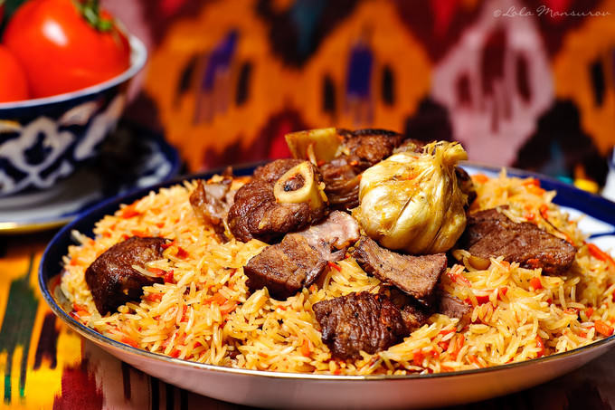

How to Make Osh

Ingredients
- 2 lbs fresh lamb
- 2 medium onions
- 5 medium carrots
- 3.5 cups of rice
- 1 bulb of garlic
- 1 cup of canola oil
- 3 tsp of salt
- 1.5 tsp of ground cumin
- pinch of ground pepper
- 8 cups of boiled water
Directions
- Cut the onion in half circles measuring 1/4 of an inch.
Keep the meat in bigger chunks. The reason why I asked to obtain lamb on the bone is to have a nicely flavored bullion.
Bullion is ultimately going to give a delightful taste to the rice.
If you are purchasing your meat from a butcher shop they always have meat on the bone.
If you do not have the bony meat under your discretion, dont worry about it and proceed with what you have.
- Heat the medium cast iron pan or a regular non stick pan.
Add the oil and heat it on high heat until you see a slight smoke (do not wait too long).
- Using a skimmer carefully and slowly lower the meat in to the oil.
You should immediately see the boiling sensation around the meat.
Keep on each side for 30 seconds and keep frying until desired color is reached.
Remember you are frying the meat on a high heat. Once the meat has a slight brown crust put the onions on top.
Add pinch of the cumin half of the salt and the black pepper.
Mix everything well and keep mixing to prevent the ingredients from sticking to the bottom of the pan.
Since you are cooking on high heat these steps are going to happen quickly. Stay on top of everything.
The reason why the main ingredients are cooked on high heat is to have nicely caramelized and tasty base.
Be sure not to overdo it. If you think you are more comfortable cooking on lower heat, by all means, do so.
- Color of the onions is the essential element do determine the color of the Palov.
If you are aiming for a lighter color Palov, there is no need to much caramelize the onions.
If you like a darker version, caramelize the onions nicely as shown in the picture below.
- Once the onions reach the desired color, put ready carrots in the pan. Add remaining salt and cumin.
Stir everything well and fry until carrots are relatively soft. Keep stirring every 30 seconds to prevent the carrots sticking to the bottom of the pan.
Once the carrots are ready turn the heat down to medium (5 in electric stove tops) and pour previously prepared 8 cups of boiled water.
- Water will start simmering but not boiling. Add the garlic bulb, push it deeper in to the bullion and let everything simmer on medium heat for 1 hour.
Meanwhile, depending on the type of the rice you are using, wash it thoroughly. Sometimes it takes multiple washes to get the starch out of the rice.
- When the time is up, remove the garlic bulb and evenly distribute the rice with the skimmer. If the water is not enough, add some more water.
If using the Basmati rice, keep the water level 1 inch above the rice, for any other time keep it 1/2 inch above the rice level.
From this point, until Palov is ready, there is no mixing the ingredients together. You need to keep everything layered until Palov is ready.
- Once the rice starts absorbing the water, take out the garlic bulb. Using the skimmer,
flip the top layer of the rice to keep it evenly moist (this is the original way of letting the rice absorb the water.
If you want to speed up this process close the lid of the pot for about 8 minutes and in medium-high heat let it stand for
10 minutes or until the rice absorbs the water. Check every 2 minutes, because you do not want the bottom of the Palov burnt).
- Check the sides of the pan to make sure there is no water remaining. Turn the heat down to medium-low and quickly make a dome from the rice.
Put the garlic bulb on top of the rice and push it in.
- Cover the rice with a plate suitable for high temperatures. Put the lid on the pan and TURN THE HEAT DOWN TO LOWEST. In electric stoves it is 1.
In Gas stoves it is barely visible flame. Let Palov rest for 20 minutes (Basmati 30 minutes).
- Once the time is up, remove the lid and the plate. Remove the garlic bulb, extract the meat and mix the rest of the ingredients using the skimmer.
- Cut up the meat into a small cubes and serve it on top of the Palov.
Return to main